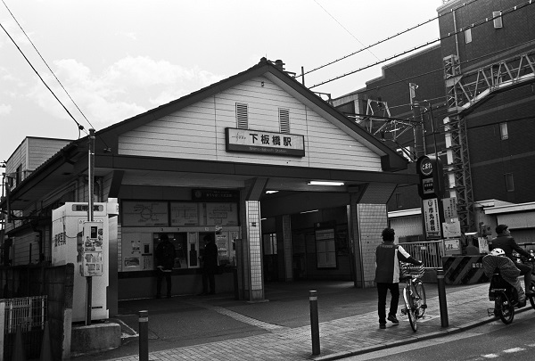
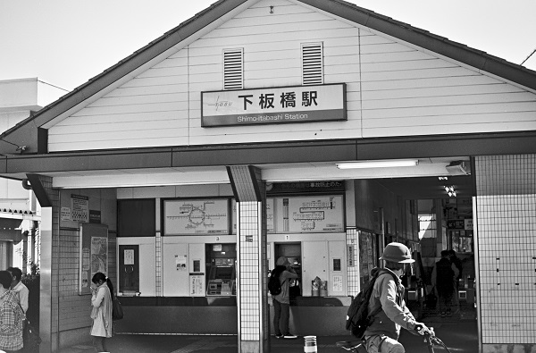

下板橋駅 Shimoitabashi
北池袋駅←← 東武東上線 →→ 大山駅

2018/3/23 ﾐﾉﾙﾀCLE 35mm Acros

2018/3/23 ﾐﾉﾙﾀCLE 35mm Acros

2018/3/23 ﾐﾉﾙﾀCLE 35mm Acros

2017/2 PentaxLX+ﾌﾟﾗﾅｰ50/1.4 Acros

2016/10 PentaxSP Tessar2.8/50 Acros

